Six screens, on a sample ledger made up for the purpose. Swipe to see them all.
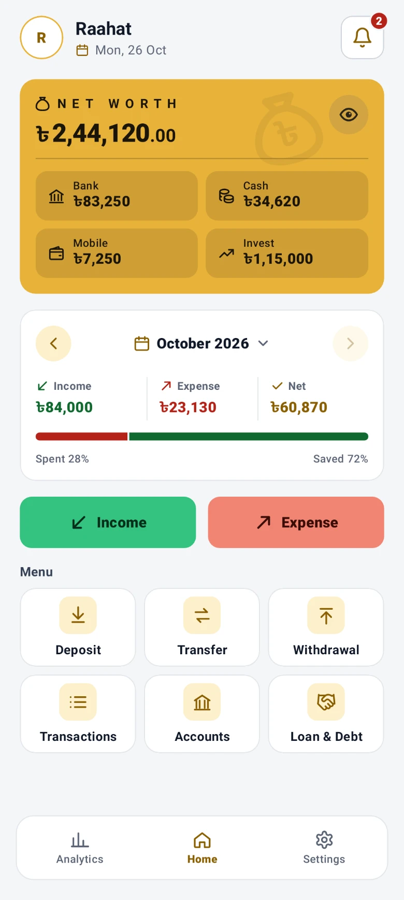
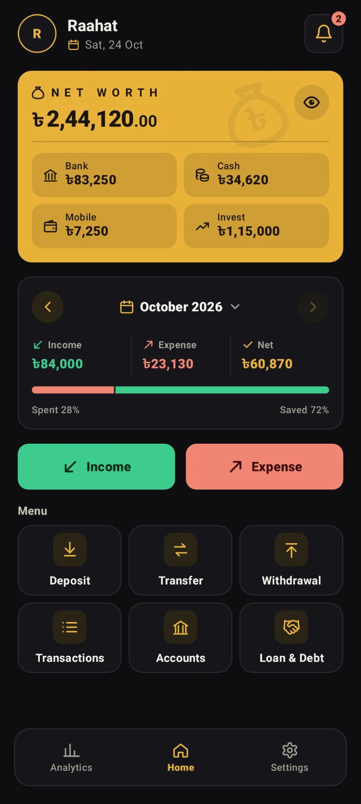
The first screen
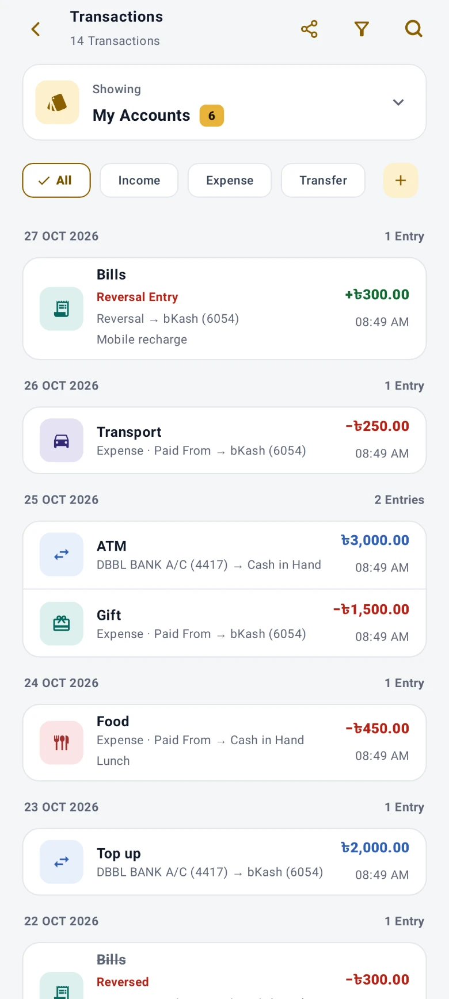
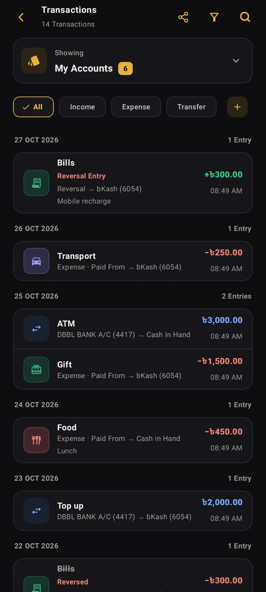
Every entry, filtered
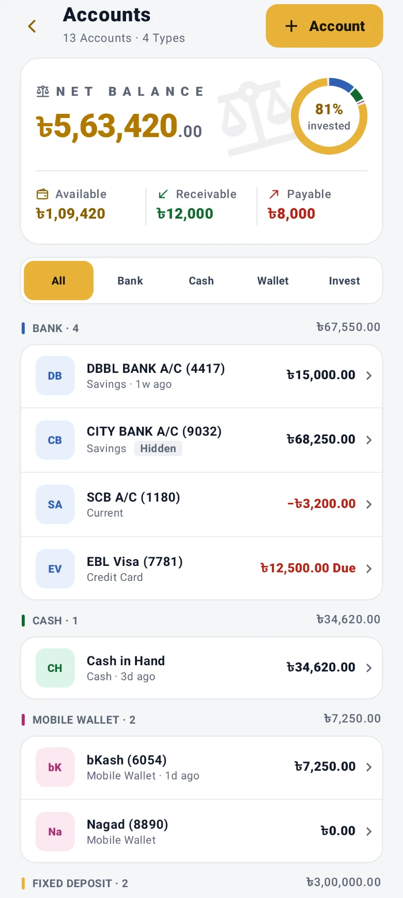
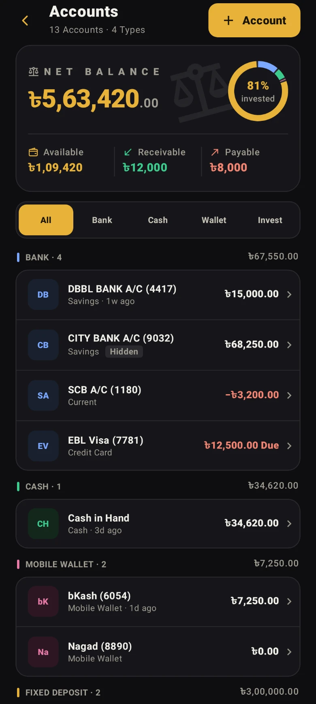
The accounts
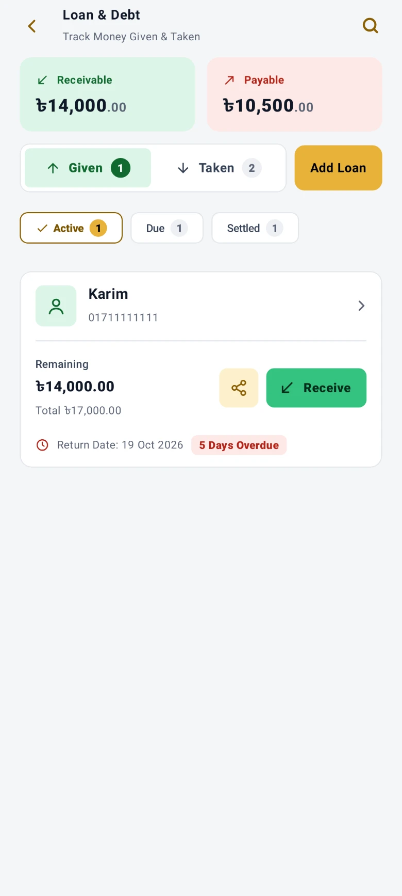
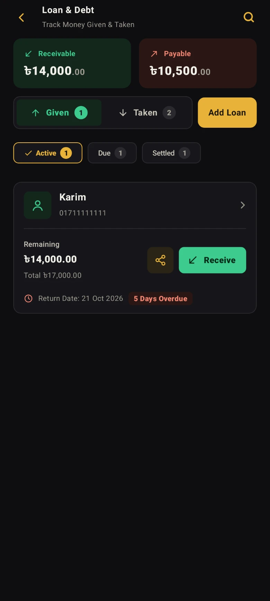
Who owes whom
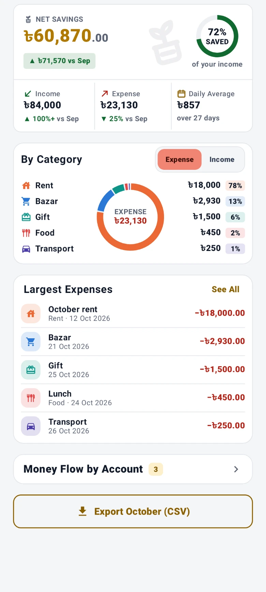
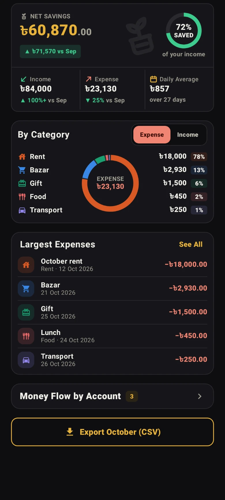
Where the month went
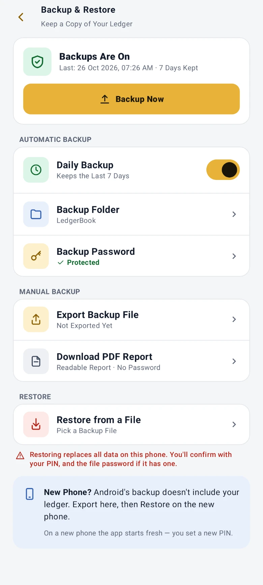
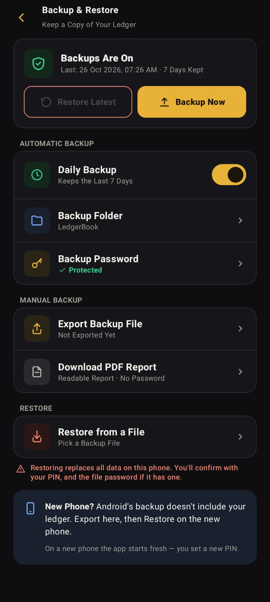
Backup and restore
01Keeping the books
What you have, on the first screen
The app opens on one figure — everything you own less everything you owe — with what others owe you and what you owe beside it, and this month’s income, spending and savings underneath. Income and Expense have their own buttons right there, and every other page is a tile on the same screen.
Five kinds of entry
Income, expense, transfer between your own accounts, and cash in or out of the bank — each its own screen, asking only what that entry needs. Type the amount on its card or add ৳500, ৳1,000 or ৳5,000 in a tap, and add up a bill on Expense with + − × ÷. An amount larger than the account holds is stopped before it is saved.
Bank, wallet, cash and deposits
Your accounts sit in groups — bank, cash, wallet and deposits — each in a colour you choose, with a total for every group and one eye that hides all the figures. Each entry offers only the accounts that fit it, and an account that still holds money cannot simply vanish: deleting it asks you to move that money first.
A trial balance that proves itself
Every amount is written twice, once on each side. The Trial Balance page adds both sides up and shows them agreeing — so if a total is ever wrong, you find out on that page instead of months later. If a check cannot finish, the page says so and offers Retry.
A mistake is reversed, not erased
Nothing in the ledger is ever deleted. Open any entry and Reverse it — after your PIN, the app records the reversal beside it — or Edit it, and the totals follow either way. The history stays whole, so every figure can still be traced.
Your books, to take away
Export your transactions as a readable PDF report, or as a CSV file that opens in Excel with Bangla intact — every transaction, not only the ones on screen. Each export asks for your PIN or fingerprint first.
02Deposits that earn
FDR profit, on its own schedule
An FDR pays its profit into the account you link — every 1, 2, 3 or 4 months or any other number of months you set, all at maturity, or on the day it opens. Source tax comes off at your TIN rate, and each payment is dated to the period it was earned for.
A DPS that grows on itself
Pay instalments every 1, 2, 3 or 4 months, or any other number of months you set — Pay lights up when one is due, and two unpaid ones raise a warning. Each year’s profit joins the deposit, so the next year earns on it too. A matured DPS can be paid back as a monthly pension.
When the bank sets the rate later
Some banks declare the final rate afterwards. Keep such a deposit without a rate and take each profit at the amount on your statement; add what the bank pays or takes back once the rate is declared. A wrong figure can be undone and entered again.
Maturity, renewal, early close
A matured FDR can be renewed where it stands, for a term in months or days. A deposit can also be closed early at a lower rate, with the bank’s fee and excise duty on lines of their own, so you can see where each taka went.
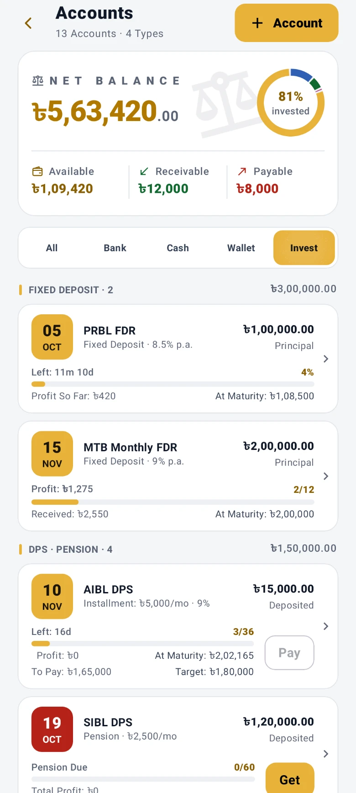
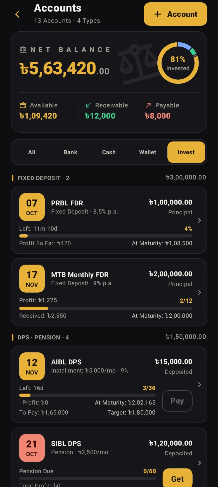
03Seeing where it went
A month at a time
Income against expense, what you saved and what share of what you earned that was, and the categories that took the most — for whichever month you pick. The month’s card turns gold when it saved and red when it overspent, so you know before you read a figure. The daily average counts a finished month over all its days, and this one over the days so far.
Which account did the work
Money in and money out for each account side by side, each marked in its own colour, so you can see which one everything actually runs through and which is just sitting there.
04Keeping it safe
Who owes you, and whom you owe
Loans in both directions on Given and Taken tabs, each person known by their mobile number — the name is optional. Set a return date and get a day’s notice before it. Money lent or repaid is checked against the account it comes from, a repayment is dated the day it happened, and a mistyped amount can be fixed later.
Backups you hold yourself
A backup is one file, kept where you choose — saved by you, or by the app every day into a folder that keeps the last seven days. Restore Latest brings back the newest copy: accounts, entries, loans and settings. A password locks the file — the daily backup keeps the one you saved, and you can change it any time; without one, anyone who has the file can open it, and nobody can recover a forgotten one. If a daily backup fails, the app tells you.
Locked, and in your language
The ledger itself is encrypted on the phone. A PIN or your fingerprint on the way in and a lock again a minute after you leave; exports and backups ask once more, and a restore or reversing an entry always takes the PIN. Bangla or English, light or dark, gold or sky blue, larger text — switchable whenever you like.
A list behind the bell
Loan dates, DPS instalments coming up, profit waiting to be taken, deposits reaching maturity, backups saved or failed, and app updates — in one list, with one card per person for loans. Clear it all at once, with Undo. It is kept on your phone only, and reminders can be switched off.